In 1884, the Qing dynasty governor of Taiwan, Liu Mingchuan, decided to move the prefecture capital to Taipei, and with the construction of government offices and the influx of civil servants, Taipei's days as a sleepy market town were over. Taipei remained the provincial capital when Taiwan was granted provincial status in 1885. As Taipei is in the north of Taiwan (the closest area to Japan), the city continued to thrive when Taiwan was ceded to Japan in 1895. However, as Japan was in the throes of a 'modernize-come-what-may' period, little regard was paid to Taipei's traditional Chinese-style architecture and many of the old buildings, including the city walls, were demolished. On the other hand, several European-style buildings were constructed by the Japanese rulers - the Presidential Palace and National Taiwan University being among the most famous. The city's architecture, however, suffered another major onslaught when the KMT government arrived from mainland China in 1945.8 offset 2
 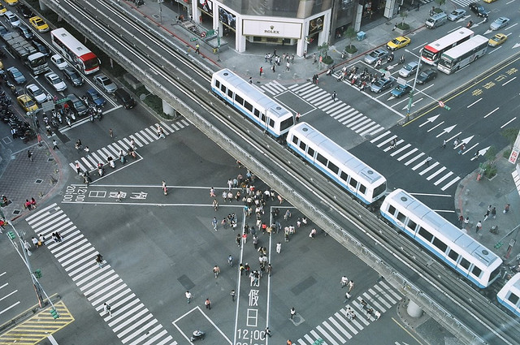
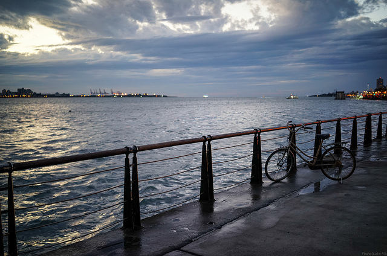
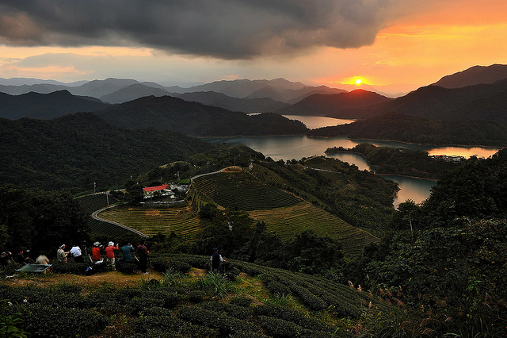
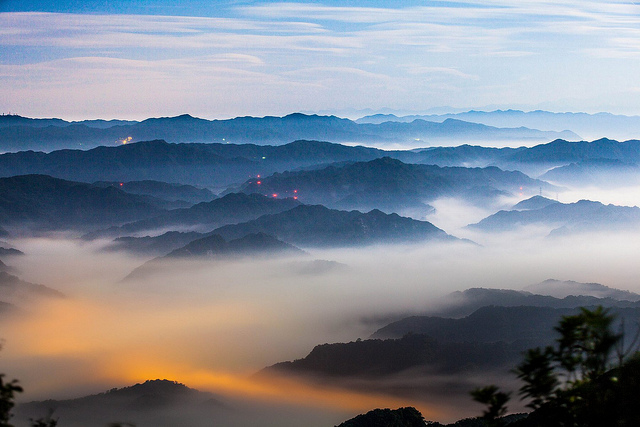
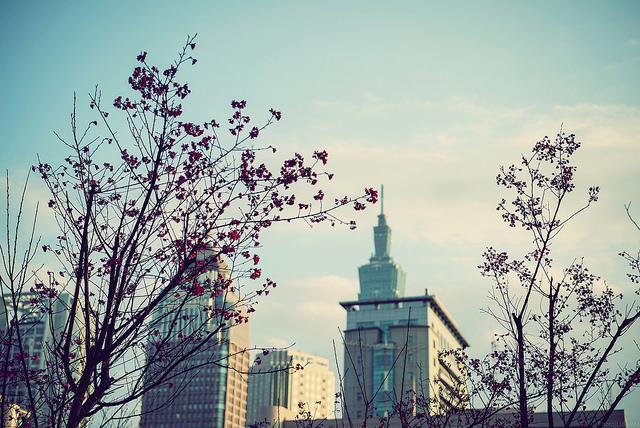
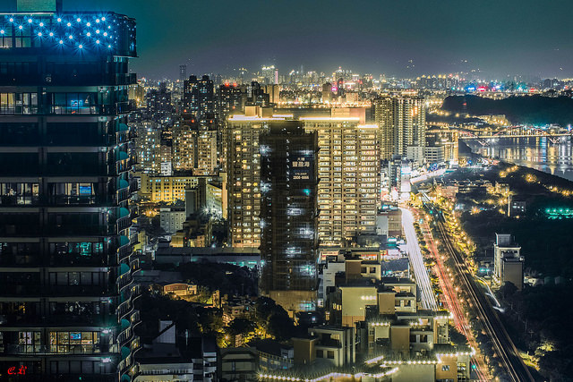
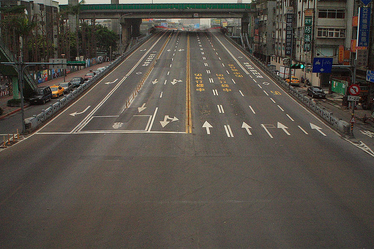
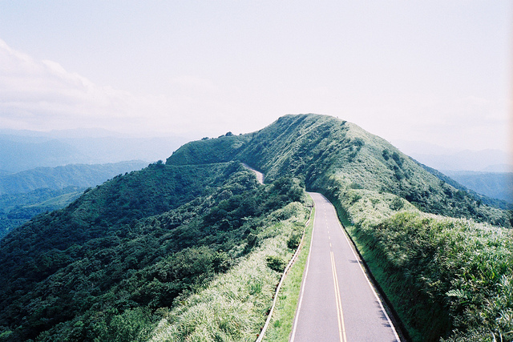
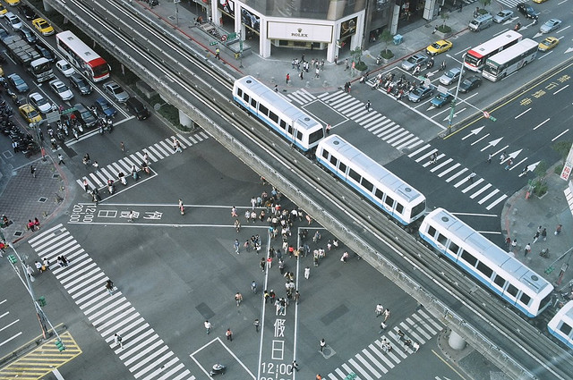
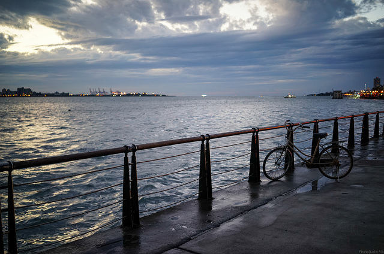
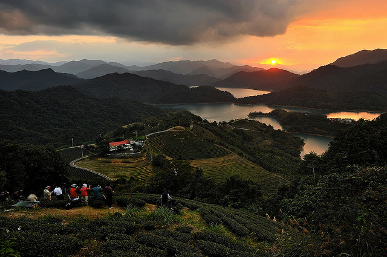
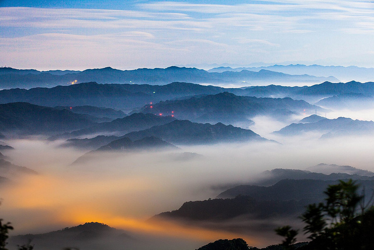
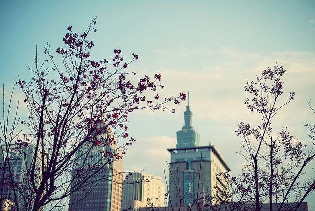
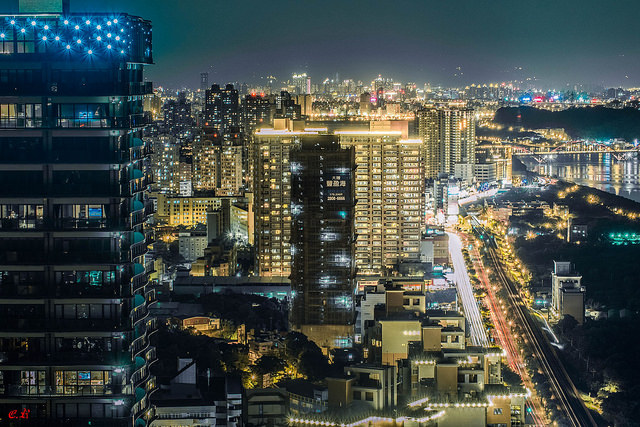
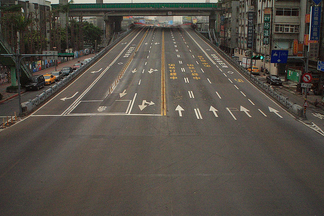
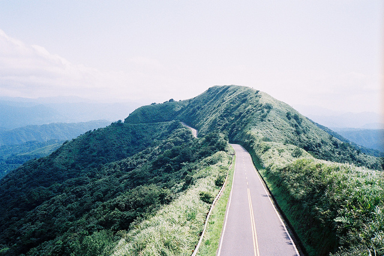